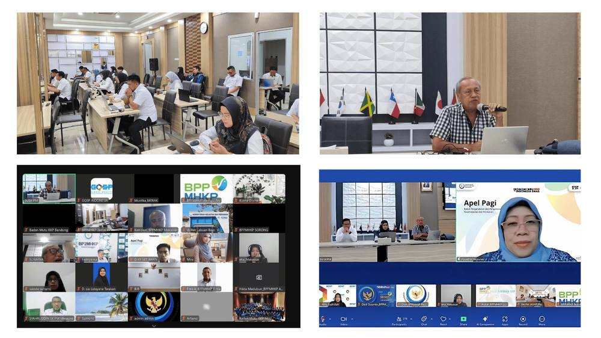

Memperkuat Jaminan Mutu: UNIDO dan BPPMHKP Selenggarakan Pelatihan ISO 17065, 17067, dan 17026 bagi Aparatur Kelautan dan Perikanan

Jakarta, 22–23 April 2025 — Dalam rangka meningkatkan kredibilitas infrastruktur mutu Indonesia di sektor kelautan dan perikanan, Global Quality and Standards Programme (GQSP) Indonesia yang diimplementasikan oleh UNIDO bekerja sama dengan Badan Standardisasi dan Pengendalian Mutu Hasil Kelautan dan Perikanan (BPPMHKP), Kementerian Kelautan dan Perikanan (KKP), menyelenggarakan pelatihan selama dua hari mengenai standar ISO 17065, ISO 17067, dan ISO 17026.
Pelatihan yang berlangsung di Gedung BUSPM, Setu, Jakarta ini diikuti oleh total 743 aparatur pemerintah dari berbagai daerah di Indonesia, terdiri dari 45 peserta luring dan 698 peserta daring. Sesi pelatihan dipandu oleh Dr. Sunarya, Pakar Infrastruktur Mutu dari UNIDO GQSP Indonesia, yang menyampaikan pemahaman mendalam terkait penerapan dan pentingnya standar-standar internasional tersebut.
Ketiga standar tersebut—ISO/IEC 17065 (sertifikasi produk, proses, dan jasa), ISO/IEC 17067 (landasan sertifikasi produk), dan ISO/IEC 17026 (evaluasi skema penilaian kesesuaian)—memiliki peran krusial dalam memperkuat sistem sertifikasi dan akreditasi nasional. Tujuan utama dari pelatihan ini adalah untuk membekali peserta dengan pemahaman teknis dan keterampilan praktis yang dibutuhkan untuk menjamin kesesuaian dengan persyaratan internasional, mendukung pengawasan regulasi yang efektif, dan mendorong perdagangan yang adil untuk produk kelautan dan perikanan.

Peserta memperoleh wawasan mengenai struktur dan prinsip utama dari masing-masing standar, termasuk prinsip ketidakberpihakan, persyaratan kompetensi, pengembangan dan pengoperasian skema sertifikasi, serta praktik terbaik dalam pengawasan regulasi. Format pelatihan yang interaktif mendorong terjadinya pertukaran pengetahuan di antara para aparatur pemerintah, yang sebagian besar terlibat langsung dalam pengawasan pasar, inspeksi, dan proses sertifikasi di tingkat daerah.
Pelatihan ini merupakan bagian dari kolaborasi berkelanjutan antara UNIDO GQSP Indonesia dan BPPMHKP dalam memperkuat kapasitas kelembagaan di bidang jaminan mutu dan kepatuhan terhadap regulasi. Melalui upaya peningkatan kapasitas ini, program bertujuan untuk memastikan bahwa produk kelautan dan perikanan Indonesia tidak hanya memenuhi standar nasional, tetapi juga mampu bersaing dan dipercaya di pasar internasional.